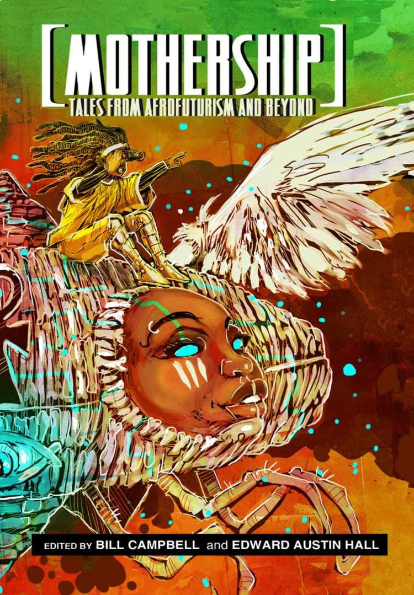
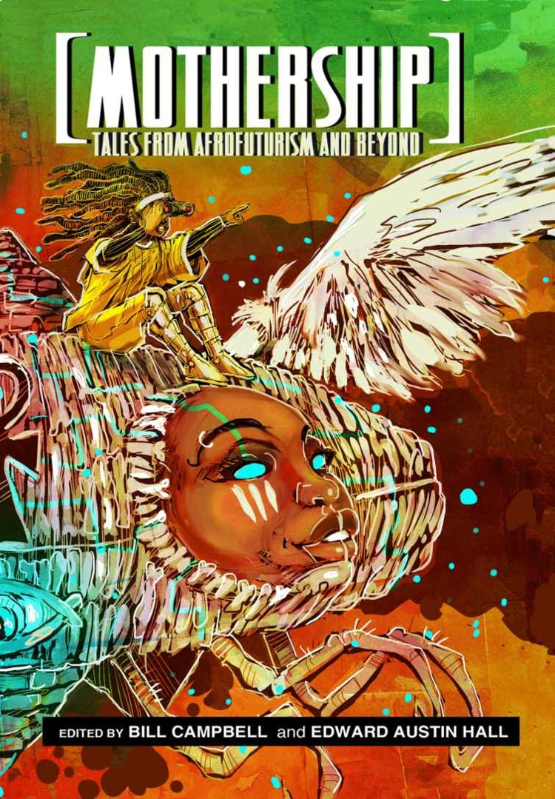

Afrofuturism refers to a flourishing contemporary movement of African American, African, and Black diasporic writers, artists, musicians, and theorists. Afrofuturism comprises cultural production and scholarly thought—literature, visual art, photography, film, multimedia art, performance art, music, and theory—that imagine greater justice and a freer expression of black subjectivity in the future or in alternative places, times, or realities. It also offers speculation about a world wherein black people are normative. Afrofuturism can also imagine dystopic worlds to come, with contemporary injustices projected into, and often intensified in, the future. However, Afrofuturist works do not always look to the future but, rather, often unsettle notions of linear time.
 

More broadly defined, Afrofuturism reimagines not only new forms of temporality but also new black experiences and identities via science and speculative fiction or other artistic and intellectual means. It often does so by exploring both the potential and the pitfalls of technoculture and posthumanism. Although the movement has certainly exploded in recent years, especially since 2000, its intellectual and aesthetic underpinnings can be traced back to mid- and late-19th-century African American novels that imagined alternative realities and communities for black people.